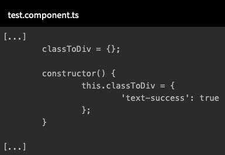

<main class="pageinter">
  <section class="container">
    <div class="row">
      <div class="col-lg-12">
        <div class="titpage">
          <h1>O que são Diretivas</h1>
      </div>
        <p>As diretivas são marcadores em um elemento DOM (como um atributo) que informam a aplicação em Angular para
          anexar um comportamento especificado a um elemento existente.</p>

        <p>As diretivas existem desde o AngularJS; na nova versão são usadas com componentes, principalmente para criar
          tags personalizadas em uma aplicação Angular. Existem muitas diretivas prontas que podemos usar mas também
          podemos criar nossas próprias diretivas.</p>

        <p>Algumas diretivas podem mudar completamente a estrutura da saída do template do componente. Essas diretivas
          podem alterar o layout do DOM adicionando e removendo elementos DOM de visualização. Podemos classificar essas
          diretivas em estruturais :</p>
        <ul>
          <li>NgIf</li>
          <li>NgFor</li>
          <li>NgSwitch, NgSwitchWhen, NgSwitchDefault</li>
        </ul>

        <p>A seguir vamos abordar as principais diretivas mostrando o seu funcionamento.</p>

        <h3>Diretiva ngIf</h3>

        <p>Esta é uma diretiva que você adiciona a um elemento na marcação, geralmente para um elemento de contâiner
          como um div.</p>

        <p>Se a expressão de template para o ngIf for verdadeira, então o conteúdo dentro do elemento é incluído na
          visão DOM depois que as vinculações foram concluídas.</p>
        <p>Se a expressão de template para o ngIf for falsa, então o conteúdo dentro do elemento é excluído da visão DOM
          depois que as vinculações forem concluídas.</p>
        <p>Então, a diretiva ngIf é usada para incluir ou excluir um elemento da interface do usuário, incluindo os
          elementos filhos do elemento. A marcação excluída por uma diretiva ngIf não será invisível, apenas não estará
          no DOM.</p>

        <hr>

        <h3>Diretiva ngFor</h3>

        <p>Esta é uma diretiva para processar cada item de um objeto iterável, gerando uma marcação para cada um. Ela é
          conhecida como uma diretiva estrutural porque pode alterar o layout do DOM adicionando e removendo elementos
          DOM de visualização.</p>
        <p>Assim, a diretiva ngFor é útil para gerar conteúdo repetido, como uma lista de clientes, elementos de um menu
          suspenso e assim por diante. Cada item processado do iterável tem variáveis ​​disponíveis em seu contexto de
          modelo, como mostrado na tabela abaixo:

          <div class="responsive-table">
            <div class="responsive-table">
              <table>
                <thead>
                  <tr>
                    <th>
                      Variável
                    </th>
                    <th>
                      Descrição
                    </th>
                  </tr>
                </thead>
                <tbody>
                  <tr>
                    <td>
                      item
                    </td>
                    <td>
                      Ex: ngFor="#nome of nomes". Neste caso o item possui a variável nome
                    </td>
                  </tr>
                  <tr>
                    <td>
                      Index
                    </td>
                    <td>
                      Iteração do laço atual para cada contexto do template
                    </td>
                  </tr>
                  <tr>
                    <td>
                      last
                    </td>
                    <td>
                      Valor booleano que indica se o item e o último na iteração

                    </td>
                  </tr>
                  <tr>
                    <td>
                      even
                    </td>
                    <td>
                      Valor booleano que indica se o item possui um índice par
                    </td>
                  </tr>
                  <tr>
                    <td>
                      odd
                    </td>
                    <td>
                      Valor booleano que indica se esse item possui um índice impar.
                    </td>
                  </tr>
                </tbody>
              </table>
            </div>
          </div>

          <hr>

          <h3>Diretiva ngSwitch</h3>

          <p>A diretiva ngSwitch é uma diretiva que exibe um elemento de um possível conjunto de elementos com base em
            alguma condição. Ela usa as diretivas ngSwitchCase e ngSwitchDefault.</p>

          <p>1- ) ngSwitchCase é usada para definir um conjunto de árvores de elementos possíveis</p>

          <p>2- ) ngSwitchDefault é usada para definir o valor padrão quando a condição de expressão não corresponde a
            nenhuma árvore de elementos definida por ngSwitchCase.</p>

          <p>A diretiva NgSwitch é usada como propriedade de ligação, como [ngSwitch] com colchete []. Para definir um
            possível conjunto de elementos, precisamos adicionar o asterisco (*) como prefixo às palavras-chave do
            switch como *ngSwitchCase e *ngSwitchDefault.</p>

          <p>Sempre que NgSwitch encontrar uma correspondência avaliada pela expressão, o respectivo elemento definido
            por ngSwitchCase será adicionado ao DOM e, se nenhuma correspondência for encontrada, o elemento definido
            por ngSwitchDefault será adicionado ao DOM.</p>

          <hr>

          <h3>Diretivas não estruturais</h3>

          <p>Outras diretivas podem simplesmente alterar a aparência dos itens gerados pelo modelo. Chamamos essas
            diretivas não estruturais, como por exemplo a ngClass.</p>


          <p>O ngClass do angular é uma diretiva que permite definir uma classe dinâmicamente a partir do DOM de um
            elemento.</p>

          <p>Para utilizar a diretiva ngClass você poderá optar por duas maneiras: Passando um objeto literal para a
            diretiva ou fazendo o uso de uma expressão.</p>

          <h4>Usando ngClass com objeto literal</h4>

          <pre class="linhacodigo">
            &lt;div &#91;ngClass&#93;="&#123;'text-success':true&#125;"&gt;&lt;/div&gt;
          </pre>

          <p>Note que dessa forme será adicionado a classe text-success a div.</p>

          <p>Este é um exemplo de uso do ngClass de forma literal. Mas ainda pode adicionar um objeto criado em seu componente, veja:</p>

          


          <p></p>

          <p>Logo após basta utilizar no HTML:</p>

          <pre class="linhacodigo">
            &lt;div &#91;ngClass&#93;="classToDiv"&gt;&lt;/div&gt;
          </pre>

          <p>Ao usar um literal de objeto, as chaves são as classes que são adicionadas ao elemento se o valor da chave for avaliado como verdadeiro.</p>

          <h4>Usando ngClass com expressão</h4>

          <p>Para utilizar o ngClass com expressão basta informar no lugar de true uma expressão que retorne um valor boleano, veja:</p>

          <pre class="linhacodigo">
            &lt;div &#91;ngClass&#93;="&#123;'text-success':country === 'BR'&#125;"&gt;&lt;/div&gt;
          </pre>

          <p>Note que caso o valor retorne verdadeiro será adicionada a classe ao elemento.</p>

          <h4>Alternativa ao ngClass</h4>

          <p>Ainda é possível utilizar apenas o class da seguinte forma:</p>

          <pre class="linhacodigo">
          &lt;div &#91;class.text-success&#93;="true"&gt;&lt;/div&gt;
          </pre>
          
            <p>ou:</p>

            <pre class="linhacodigo">
                &lt;div &#91;class.text-success&#93;="&#123;country === 'BR'&#125;"&gt;&lt;/div&gt;
                </pre>
            
            


      </div>
    </div>
  </section>
</main>
